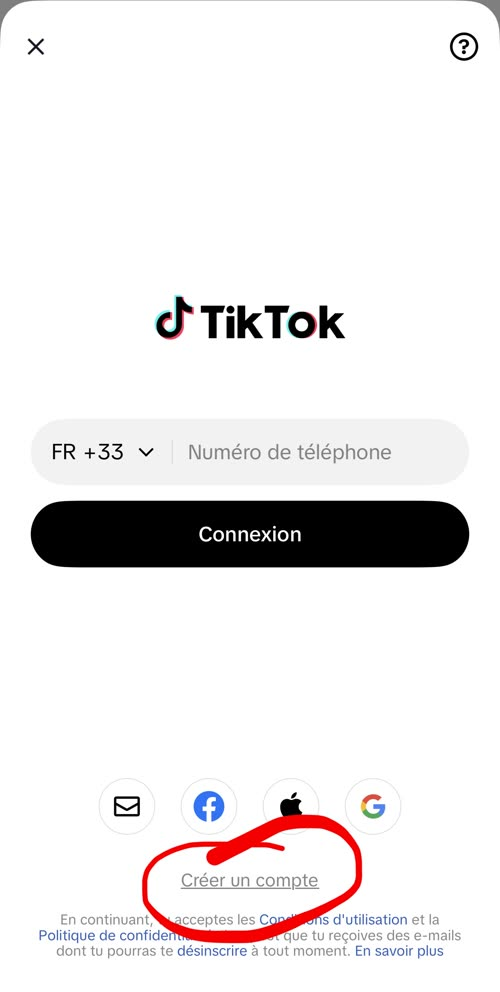
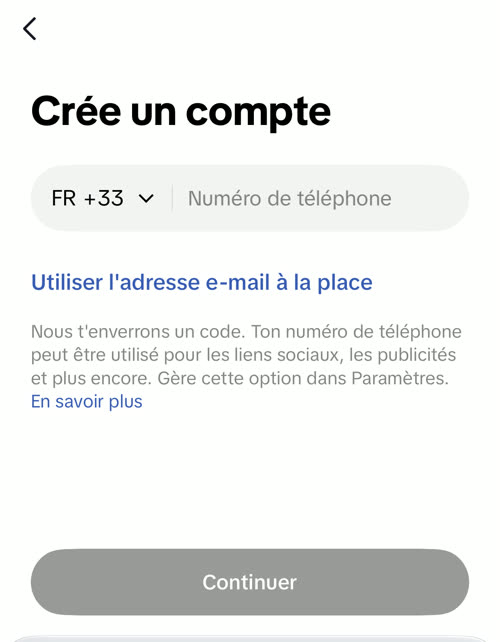
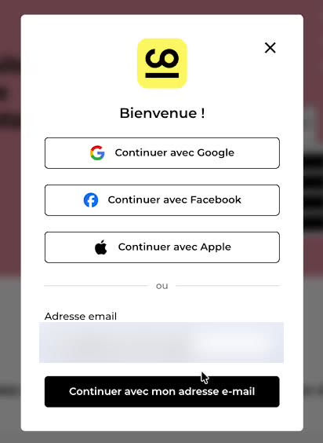
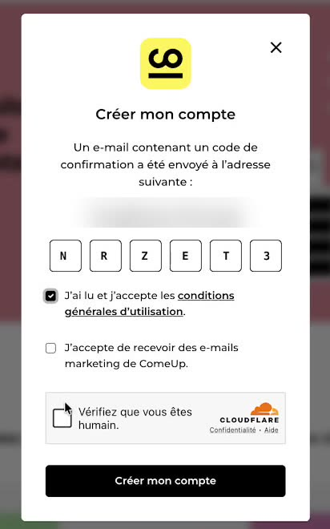
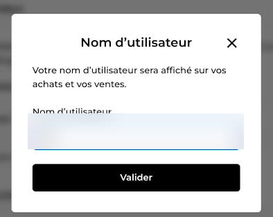
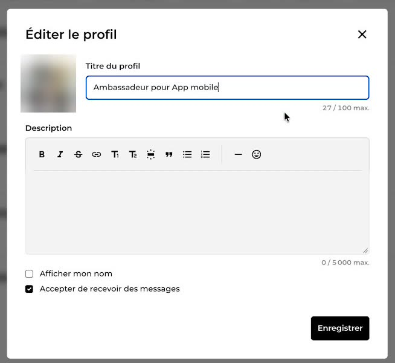
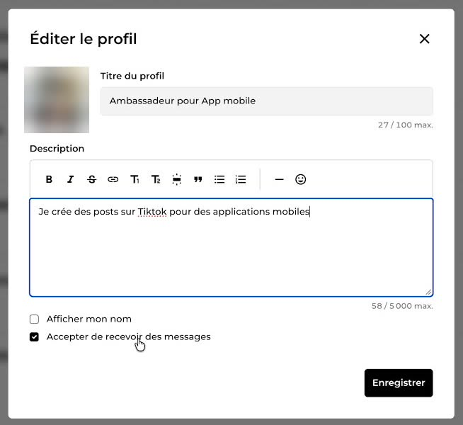
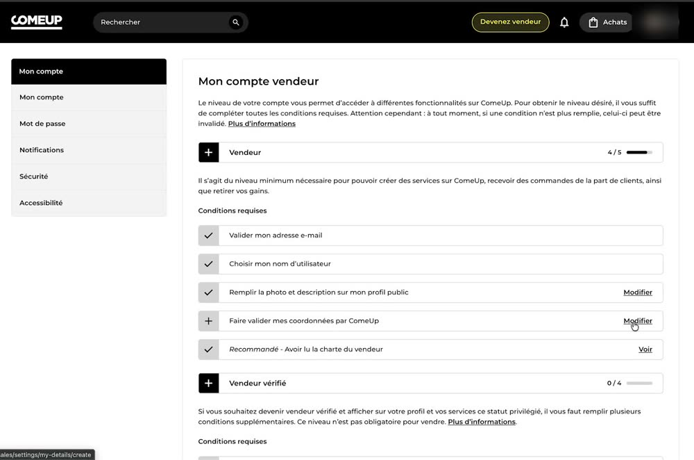
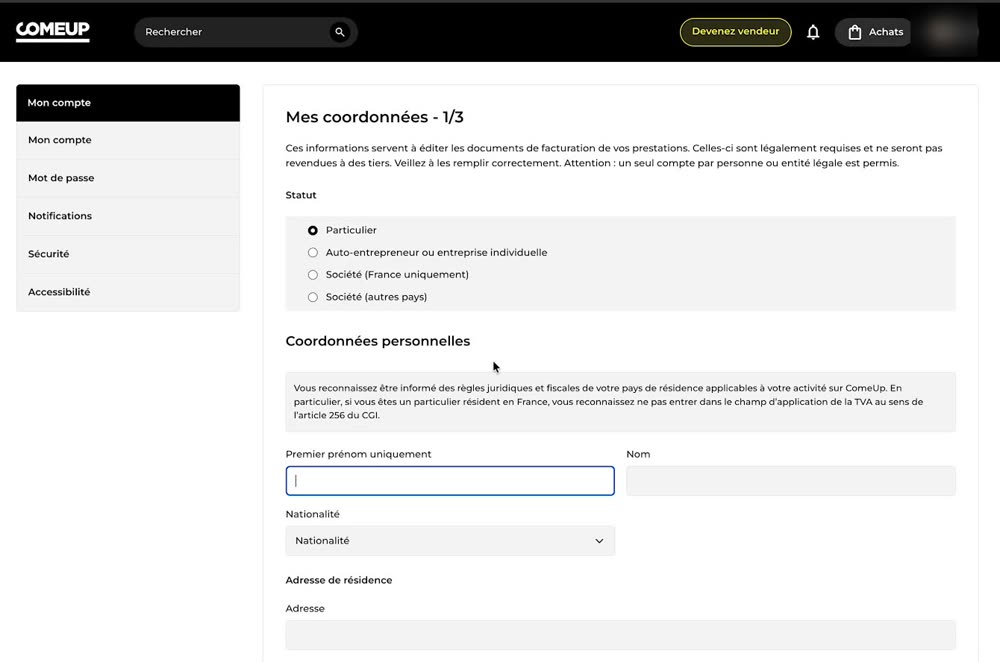
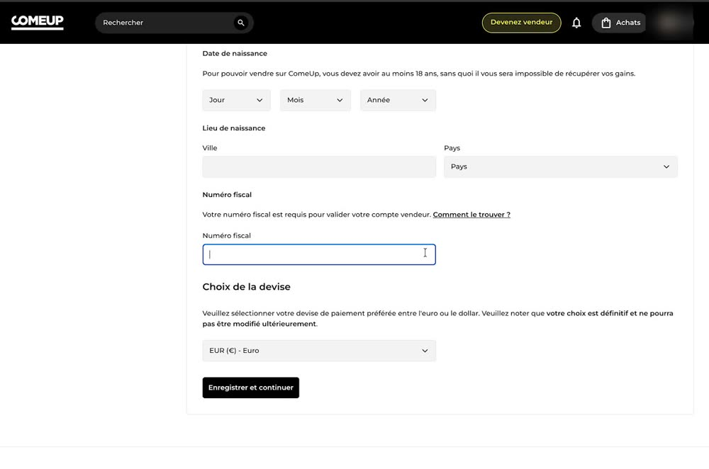

Bienvenue dans l'équipe
Tout ce qu'il faut pour démarrer, dans l'ordre. Coche chaque étape une fois faite. Tes cases restent cochées sur ce téléphone, dans ce navigateur.
Pourquoi on fait ça
- Aider chacun à mieux se parler. Punchlines, ce sont des phrases simples qui redonnent confiance.
- Tomber au bon moment. Un seul de tes posts peut arriver pile le jour où quelqu'un en a besoin.
- Porter le message plus loin. Grâce à toi, il touche des gens qu'on n'atteindrait jamais seuls. Merci.
Notre accord
Tes étapes
-
- Dans TikTok, va sur Profil et appuie sur ton nom en haut. Choisis Ajouter un compte, puis le petit lien Créer un compte en bas.
- Indique ta date de naissance.
- Inscris-toi par email avec l'adresse que je t'ai envoyée sur WhatsApp, du type
prenom.tiktok@thepunchlines.app. - Le code de vérification arrive dans ta boîte mail habituelle.

Appuie sur « Créer un compte ». 
Puis « Utiliser l'adresse e-mail à la place ». -
Choisis un nom d'utilisateur, par exemple
prenom.punchlinesouprenomlovespunchlines. Mets une photo de toi et, comme nom, ton prénom ou un pseudo. Écris une bio qui parle de Punchlines, par exemple « J'utilise l'app Punchlines pour voir la vie en rose ».Ton compte, pas une pubLe but : avoir l'air d'une personne normale sur TikTok, pas d'un compte de marque. C'est ton compte, approprie-le. La seule différence, c'est que tu n'y postes que des choses autour de Punchlines.
Les gens zappent les pubs sur les réseaux. Ce qui marche, c'est quelqu'un qui raconte honnêtement comment il utilise une app. Alors ne parle jamais comme une pub.
Ne poste rien pendant 3 jours.
-
Suis au moins 20 comptes qui parlent de bien-être, d'affirmations ou de pensée positive. Puis, pendant 10 minutes, like, commente et enregistre une dizaine de vidéos sur ces thèmes. Ça apprend à TikTok à qui montrer tes posts.
-
Encore 10 minutes : like, commente et enregistre une dizaine de vidéos sur les mêmes thèmes.
-
Dernier jour de préparation : encore 10 minutes, comme hier. Demain, tu peux poster.
-
C'est là que tu recevras tes paiements. Fais-le pendant tes 3 jours de préparation, sur comeup.com/fr/become-seller. Tu as une auto-entreprise ? Tu peux sauter cette étape et me facturer directement.
Voir les écrans pas à pas

1. Ton adresse email, puis « Continuer avec mon adresse e-mail ». 
2. Le code reçu par email, les conditions, la case « humain », puis « Créer mon compte ». 
3. Ton nom d'utilisateur. 
4. Une photo et un titre, par exemple « Ambassadeur pour App mobile ». 
5. Une description, par exemple « Je crée des posts sur TikTok pour des applications mobiles ». 
6. Va dans « Mon compte vendeur ». Sur la ligne « Faire valider mes coordonnées », clique sur « Modifier ». 
7. Statut Particulier, puis ton nom et ton adresse. 
8. Ta date de naissance, ton numéro fiscal (le lien « Comment le trouver ? » t'aide), la devise Euro, puis « Enregistrer et continuer ». -
Une vidéo, un carrousel ou une simple image : tous les formats comptent. Chaque post montre Punchlines, à ta façon. Je t'envoie des exemples et des accroches qui marchent. Envoie-moi le lien de ton premier post sur WhatsApp : dès que je l'ai, je déclenche ton premier paiement.
Bravo, tout est prêt ! À toi de jouer : 2 posts par jour.
Tes paiements
Tu reçois 100 € au début de chaque semaine, sur ComeUp. Ton premier paiement part dès ton premier post. Punchlines paie les frais de ComeUp.
Tes bonus
Chaque post te rapporte un bonus selon ses vues : celui du plus haut palier qu'il atteint. On relève ses vues 7 jours après la publication, puis on ne les change plus. On fait le compte à la fin du mois.
| 10 000 vues | 10 € |
| 25 000 vues | 20 € |
| 50 000 vues | 35 € |
| 100 000 vues | 60 € |
| 250 000 vues | 120 € |
| 500 000 vues | 200 € |
Exemple : 4 posts à 100 000 vues dans le mois, ça fait 4 × 60 € = 240 € de bonus, en plus des 100 € par semaine.
Bon à savoir
- Tes posts en pubJe peux transformer n'importe lequel de tes posts en publicité TikTok. Les vues de la pub ne comptent pas dans tes bonus : on relève tes vues à 7 jours, avant toute promotion.